1.COMPONENTES DE MICROCOMPUTADORES
- 1.1 Componentes internos
- 1.1.1 CPU
- 1.1.2 Armazenamento
- 1.1.3 Memória
- 1.1.4 Fonte de alimentação
- 1.2 Componentes Externos
- 1.2.1 Teclado
- 1.2.2 Monitor de vídeo
- 1.2.3 Mouse
- 1.2.4 impressora
- 1.2.5 plotter
- 1.2.6 Scanner
- 1.2.7 Gabinete
- 1.2.8 Web Cam
- 1.2.9 Caixas de som
- 1.2.10 Microfone
- 1.2.11 Head Set
- 1.3. Interfaces de entrada e saída
- 1.3.1 Interfaces sem fio
- 1.3.2 Áudio
- 1.3.3 Rede (Ethernet)
- 1.3.4 VGA
- 1.3.5 HDMI
- 1.3.6 USB
componentes internos
Hardware internos m Ciência da Computação, entende-se como hardware interno componentes como processador, placa-mãe, memória RAM, placa de vídeo, coolers e ventoinhas, cabos internos, fonte, HD, SSD, unidades ópticas (drives de CD/DVD/Blu-ray), etc.
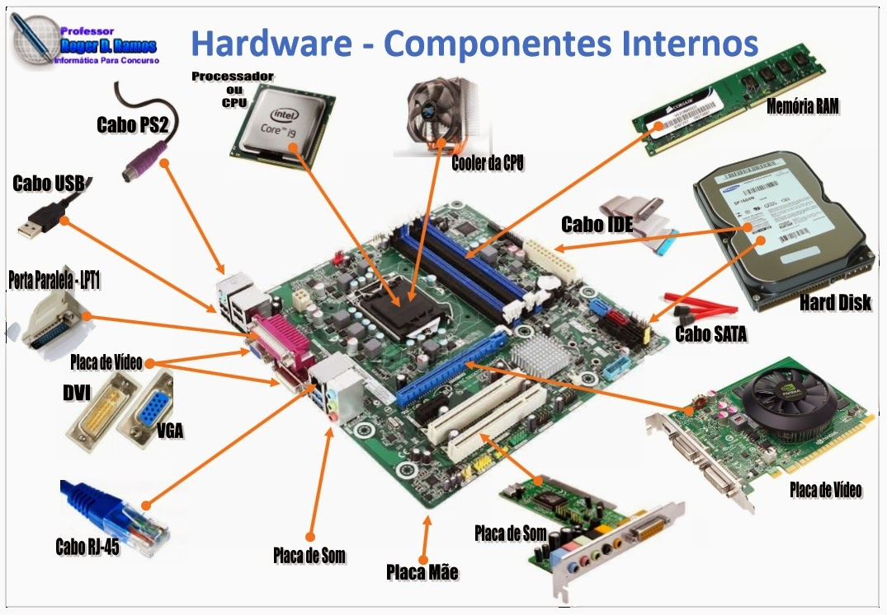
CPU
CPU é a sigla em inglês para Unidade Central de Processamento, o componente do computador que concentra todas as principais operações que permitem a seu PC, celular, tablet ou videogame a funcionar. Não é exagero, portanto, se referir à CPU como o “cérebro” desses dispositivos.
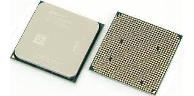
Armazenamento
Armazenar significa guardar ou estocar qualquer coisa para posterior uso. Armazenamento também é a tradução de storage, termo em inglês que descreve espaços como self-storages, embalagens para guardar objetos ou sistemas para armazenar dados de computadores, celulares e outros dispositivos.

Memória
Memória se refere aos processos usados para adquirir, armazenar, reter e, eventualmente, recuperar informação. Entre esses processos, três são mais relevantes: codificação, armazenamento e recuperação.
A memória humana envolve a capacidade tanto de preservar quanto de recuperar a informação que adquirimos, seja por aprendizado ou experiência.
Mas, como sabemos bem, esse processo não é perfeito. Às vezes nos esquecemos ou lembramos errado de algumas coisas. Em alguns casos, elas sequer são codificadas de maneira correta na memória.
Os problemas de memória podem variar desde pequenos inconvenientes até doenças graves, como Alzheimer e outros tipos de demência que afetam a qualidade de vida e a funcionalidade da pessoa.
Fonte de alimentação
Fonte de alimentação é utilizada para fornecer energia à carga elétrica. Portanto, é um dispositivo elétrico que fornece energia ao circuito. Normalmente, a fonte da eletricidade é uma bateria, gerador ou tomada.
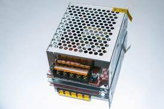
Componentes Externos
componentes externos são os periféricos utilizados para que o usuário consiga interagir com a máquina: monitor, teclado, Mouse, caixas de som, impressora
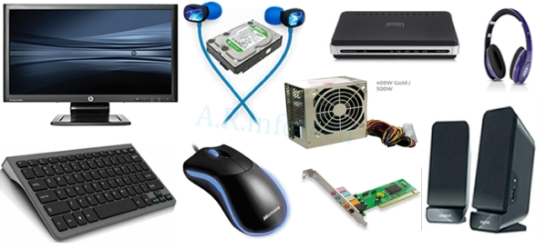
Teclado
Como funciona o teclado? O teclado é um dos acessórios indispensáveis para a informática e para qualquer pessoa que utilize um computador, ele fornece uma série de atalhos para diversas funções, facilitando a realização das tarefas e consequentemente a melhora nos resultados produzidos a partir do computador
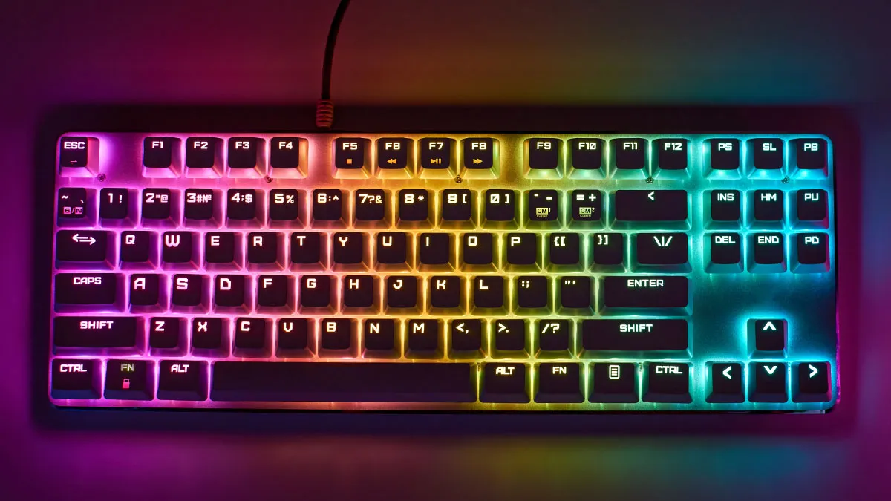
Monitor de vídeo
Um monitor é um dispositivo de saída do computador, cuja função é transmitir informação ao utilizador através da imagem. Porém são poucas as pessoas que se interessam por sua historia. Na década de 1950, a televisão ainda era novidade. Os computadores ocupavam vários metros quadrados, e eram utilizados cartões perfurados para armazenar, e papeis impressos para exibir os dados. Estes computadores eram usados em grandes empresas, pois era inviável e inútil alguém ter um destes em casa. Naquela época, era ficcional existirem computadores pessoais, e também que estes tivessem uma interface gráfica (termo desconhecido na época).
A tecnologia começou a avançar cada vez mais, e com ajuda da tecnologia dos televisores, o monitor foi criado. Antes do monitor, foi desenvolvido o Tele impressor, que exibia as imagens em uma tela de televisão, evitando assim um monte de impressões. O monitor só exibia as imagens dos códigos.
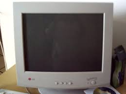
Mouse
O mouse faz parte dos periféricos do seu computador e é a parte que no permite interagir com os objetos que aparecem na tela através de um cursor que podemos ver no monitor.
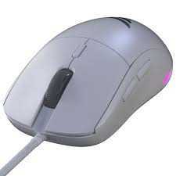
impressora
Elas imprimem, digitalizam, tiram cópias e deixam seu dia bem mais prático! Gente, com uma multifuncional você pode tirar cópias de papéis, digitalizar documentos e imprimir o que você quiser sem precisar sair de casa, viu? E o legal é que dá pra escolher modelos que imprimem com tanque de tinta, cartuchos ou laser!
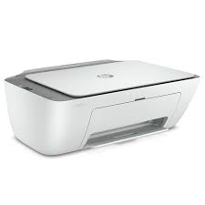
plotter
As impressoras plotter são uma categoria específica de impressoras que variam daquelas que usamos em um ambiente de escritório típico. Essas impressoras são feitas para indústrias que usam softwares específicos para impressões altamente detalhadas.
Scanner
Esse equipamento permite digitalizar documentos ou transferir informações diretamente para o computador ou notebook. Mas, o que significa scanner? A resposta é simples: ele é um digitalizador. Seu mecanismo é relativamente simples, já que fotos ou documentos são digitalizados por meio de uma varredura do arquivo.
Gabinete
Na informática, o gabinete de computador, também conhecido como case, caixa, chassis, carcaça ou torre, é o compartimento que contém a maioria dos componentes de um computador. Um case de computador, às vezes, é referido metonimicamente como CPU, referindo-se a um componente situado dentro da caixa
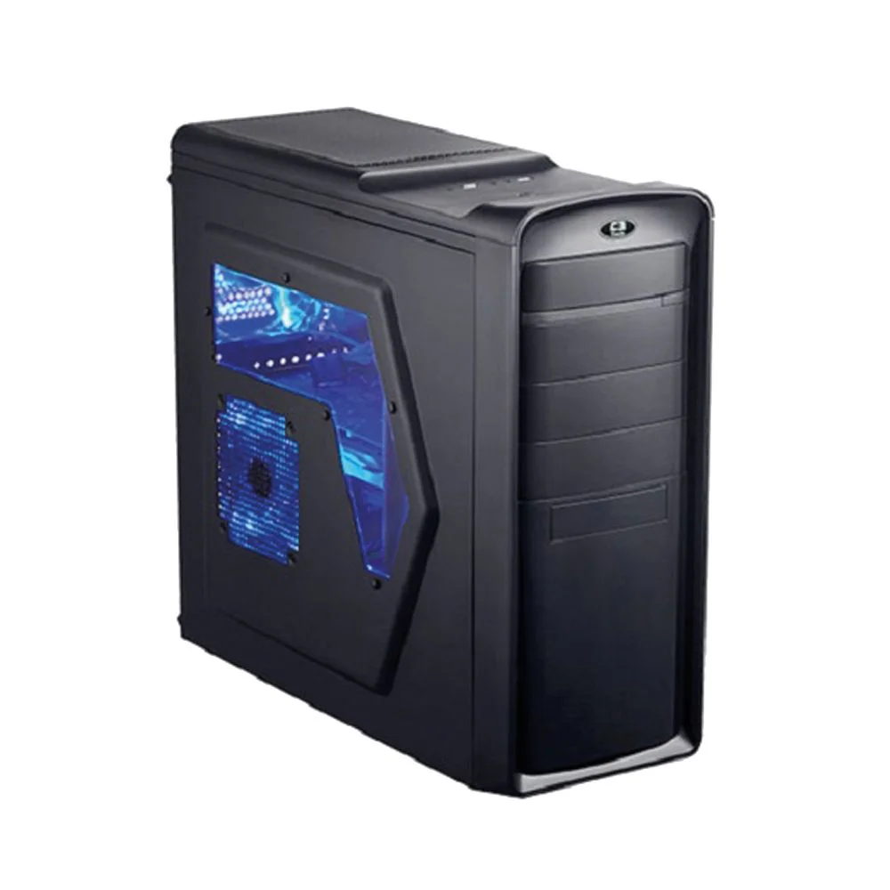
Web Cam
Webcam ou câmera web é uma câmera de vídeo de baixo custo que capta imagens e que as transfere para um computador. Pode ser usada para videoconferência, monitoramento de ambientes, produção de vídeo e imagens para edição, entre outras aplicações.

Caixas de som
Caixa acústica ou Caixa de Som, no Brasil, ou Coluna, em Portugal, é uma caixa construída em madeira, MDF ou plástico, contendo uma abertura para um amplificador sonoro, melhorando a reprodução sonora.

Microfone
O microfone é um transdutor que converte o som em sinais elétricos. Microfones são usados em muitas aplicações como telefones, gravadores, aparelhos auditivos, shows e na transmissão de rádio e televisão
Head Set
Traduzido do inglês-Os fones de ouvido se conectam a um telefone ou a um computador, permitindo que o usuário fale e ouça enquanto mantém as duas mãos livres.

Interfaces de entrada e saída
As interfaces de entrada e saída são responsáveis pela conexão entre as várias partes de um sistema computacional baseado na arquitetura de Von-Neumann.
 Interfaces sem fio
Interfaces sem fio
Nessa tecnologia, a comunicação de dados é realizada por meio de ondas eletromagnéticas, como frequências de rádio, infravermelho e satélite, ao invés de cabos e fios. As comunicações sem fio operam em frequências específicas no espectro eletromagnético de 3 Hz a 3000 GHz (3 THz), chamadas de ondas de rádio.

Áudio
1. Relativo ao som. 2. Relativo à gravação, reprodução, transmissão ou recepção de som.
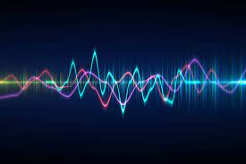
Rede (Ethernet)
A Ethernet é um meio físico de comunicação de redes locais (LAN). Faz a conexão entre sistemas e dispositivos para o envio de pacotes de dados, identificando possíveis colisões. Suporta longas distâncias e taxas de bits elevadas, e pode ser aplicada a equipamentos novos e antigos, com performance em tempo real.
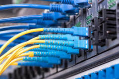
VGA
VGA é a sigla para Video Graphics Array (ou Matriz Gráfica para Vídeo, em português), que identifica o padrão para displays gráficos desenvolvido pela IBM em 1986, e usado pela primeira vez no ano seguinte, com a linha de computadores pessoais IBM PS/2.
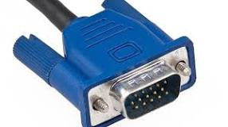
HDMI
O HDMI, sigla para High-Definition Multimedia Interface, é um conector desenvolvido para compartilhar dados de vídeos e áudio entre dispositivos. É uma tecnologia que deve ser disponibilizada nos aparelhos eletrônicos diversos, como monitores, notebooks, computadores, TVs, projetores e muito mais.
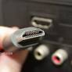
USB
Universal Serial Bus (abreviado como USB, em português, porta serial universal) é um padrão da indústria que estabelece especificações para cabos, conectores e protocolos para conexão, comunicação e alimentação (interface) entre computadores, periféricos e outros computadores.
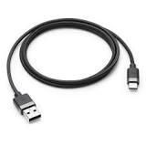